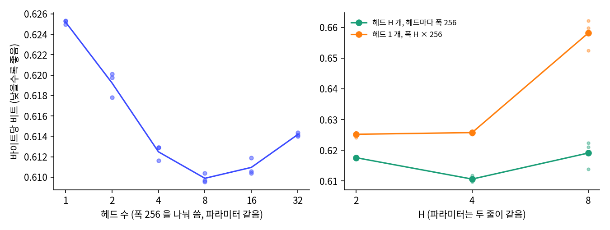
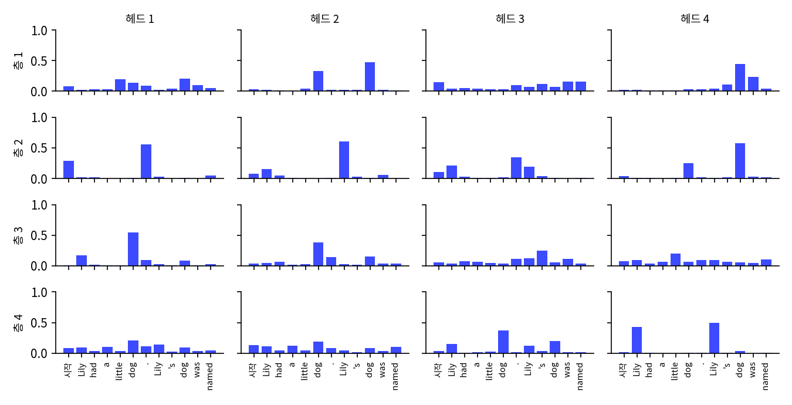
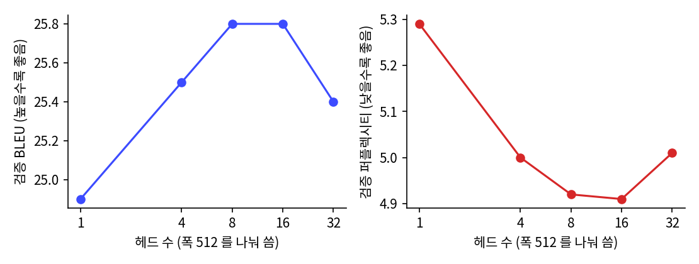
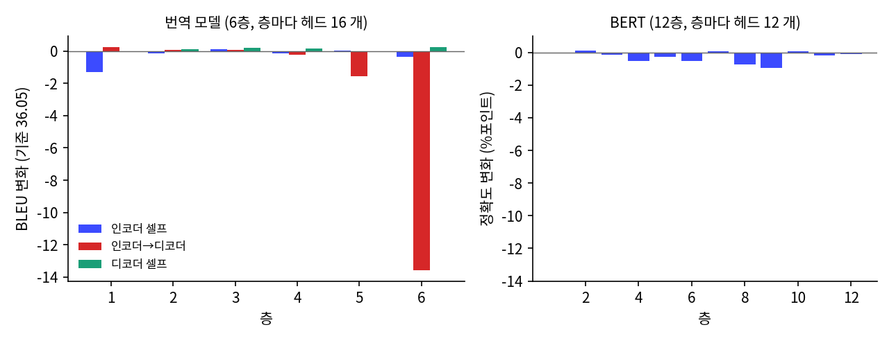
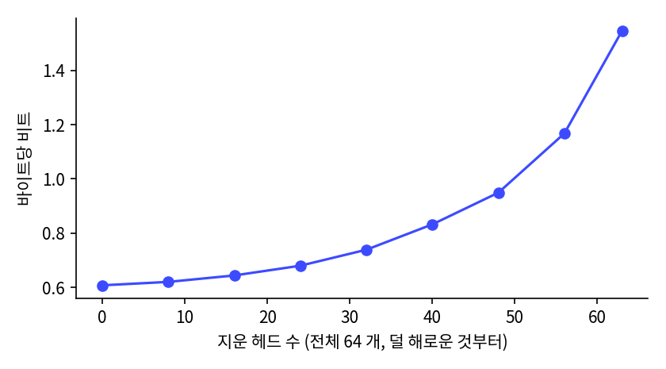

부품을 다시 보기: 헤드는 왜 여럿인가
이 장의 물음
트랜스포머를 소개하는 글은 대개 「어텐션 헤드를 여러 개 두고, 어텐션 뒤에 폭을 네 배로 늘린 MLP 를 붙인다」고 적고 넘어간다. 그 구조를 따라 치면 모델은 돌아가고 왜 그렇게 짰는지 몰라도 동화는 나오지만, 코드를 다시 읽으면 이상한 데가 있다. 헤드 수를 바꿔도 파라미터 수는 한 개도 변하지 않는다. 그러면 헤드는 왜 나눌까?
민준과 서연은 지금까지 코드를 따라 만들고, 동화를 쓰게 하고, 뽑는 법을 배우고, 대화를 읽혀 묻는 말에 짧게 답하게까지 했다. 이 장에서는 처음으로 앞으로 나아가지 않고 멈춰서 부품을 다시 본다. 들여다볼 것은 동화만 읽은 GPT 들이다. 헤드 수를 바꿔 가며 여러 번 학습해야 해서 실험 대부분은 1부의 작은 GPT 크기로 하고, 동화 GPT 에서는 같은 모양이 나오는지만 확인한다. 대답하는 루나도 동화 GPT 에 대화를 더 읽혀 만들었으니 헤드는 그대로다.
| 이 장에서 부르는 이름 | 층 · 폭 · 헤드 | 쓰는 곳 |
|---|---|---|
| 작은 GPT (헤드 수 실험) | 4층 · 256 · 1~32 개(폭을 나눠 씀) | 헤드 수 표, 헤드 들여다보기, 헤드 지우기 |
| 폭을 지킨 헤드 · 넓은 헤드 하나 | 4층 · 256 · 헤드마다 256 또는 하나에 H × 256 | 나누는 효과만 따로 보기 |
| 장난감 모델 | 1층 · 64 · 1~8 개 | 몇 군데를 동시에 읽는 문제 |
| 동화 GPT | 8층 · 512 · 8 개 | 헤드 지우기 확인 |
- 파라미터가 같다면 헤드를 왜 나눌까? 헤드 1 개와 32 개는 무엇이 다를까? 헤드 하나로는 정말 어려운 일이 있을까?
- 헤드는 합성곱의 채널과 같은 것일까? 무엇이 같고 무엇이 다를까?
이 장이 끝나면 두 사람은 헤드 수를 바꾸고 헤드를 지워 가며 측정한 숫자로, 헤드가 무엇을 맡는지 말할 수 있게 된다. 설정서의 칸이 새로 채워지지는 않지만, 앞에서 한 말을 기억하는 일을 어느 부품이 맡는지 알아보는 첫걸음이다.
왜 헤드가 여럿인가: 파라미터를 같게 두고 헤드 수만 바꾸기
루나가 처음 대답한 다음 날, 서연은 200줄 GPT 의 파라미터 표를 프린트해 라운지로 가져왔는데, 처음 그 표를 봤을 때 적어 둔 물음에 동그라미가 쳐 있었다.

그때 걸렸던 거. 헤드 수는 쿼리·키·값을 몇 조각으로 나눌지만 정하고, 파라미터는 그대로라고 했잖아. 그러면 헤드는 공짜야. 공짜면 왜 넷이야? 서른둘로 하면 안 돼? 아니면 그냥 하나로 하면?

트랜스포머 논문이 여덟 개라서 다들 그러는 거 아닐까.

그건 이유가 아니지.

그럼 돌려 보자. 작은 GPT 면 하나에 몇 분이야.
민준은 폭 d = 256 과 4층은 그대로 두고 헤드 수만 1, 2, 4, 8, 16, 32 로 바꿨다. 학습 조건은 GPT 와 MLP 언어 모델을 비교할 때와 같고(4,000 스텝, 스텝당 16,384 토큰, 학습률 2e-3), 시드는 1337, 1, 2 세 가지다.
# sources/gpt-parts/heads_sweep.py 에서 발췌
cfg = G.GPTConfig(vocab_size=tok.vocab_size, block_size=256, n_layer=4, n_head=H if kind == "split" else 1, n_embd=D)
torch.manual_seed(args.seed)
m = G.GPT(cfg).to(dev)
h = T.train(m, tr, va, tb, batch_size=64, block_size=256, max_steps=4000, lr=2e-3, warmup=100, grad_clip=1.0,
eval_every=1000, log_every=4000, device=dev, eval_tokens=2_000_000, seed=args.seed, log=lambda s: None)
묶음 H 파라미터 층 어텐션 평균 최소 최대 시드 수
split 1 4,273,664 263,168 0.6252 0.6250 0.6253 3
split 2 4,273,664 263,168 0.6192 0.6178 0.6201 3
split 4 4,273,664 263,168 0.6125 0.6116 0.6129 3
split 8 4,273,664 263,168 0.6099 0.6096 0.6104 3
split 16 4,273,664 263,168 0.6110 0.6104 0.6119 3
split 32 4,273,664 263,168 0.6142 0.6140 0.6144 3
sources/gpt-parts/summary.out 의 앞부분으로, 검증 글 전체의 바이트당 비트를 시드 세 개에 대해 적은 표다(split 은 gpt.py 그대로 폭을 나눠 쓴 모델). 헤드 4 개, 시드 1337 의 값은 작은 GPT 를 처음 학습했을 때의 0.6129 와 같은 값이다. 체크포인트는 이 실험에서 따로 저장한 split_H4.pt 다.


0.6252 에서 0.6099. 0.0153 차이네. 생각보다 얌전한데?
그래도 시드 차이보다는 커. 같은 헤드 수끼리는 많아야 0.002 정도밖에 안 벌어지는데, 1 개에서 8 개로 가면 0.015 가 줄고, 32 개로 가면 다시 0.0043 올라가. 한 방향으로 계속 좋아지지 않아.
서른둘이면 헤드 하나 폭이 8 이야. 쿼리랑 키를 숫자 여덟 개로 맞춰 보는 거지. 그럼 나빠지는 게 이상하진 않네.
파라미터가 같은데 숫자가 달라졌으니 헤드 수는 학습 결과를 바꾸지만, 이 정도 글과 이 정도 학습량에서는 차이가 작다.
나누는 효과만 따로 보기
그런데 이 표는 두 가지가 같이 바뀌어. 헤드가 많아지면 헤드 하나의 폭이 줄잖아. 나눠서 좋아진 건지, 폭이 줄어서 나빠진 건지 어떻게 알아?

그럼 헤드마다 폭 256 을 그대로 주면 되지. 파라미터는 늘겠지만.

그러면 파라미터가 늘어서 좋아졌다는 말도 섞여요. 파라미터를 똑같이 늘리되 헤드는 하나로 두고 폭만 H × 256 으로 넓힌 모델과 나란히 놓으면, 나누는 효과만 남아요.
# sources/gpt-parts/heads_sweep.py 에서 발췌
class WideAttention(nn.Module):
"""헤드 H 개, 헤드 하나의 폭 hd. 합 H*hd 가 모델 폭 d 보다 커도 된다."""
H, hd = 1, 256
def __init__(self, cfg):
super().__init__()
self.total = self.H * self.hd
self.c_attn = nn.Linear(cfg.n_embd, 3 * self.total)
self.c_proj = nn.Linear(self.total, cfg.n_embd)
묶음 H 파라미터 층 어텐션 평균 최소 최대 시드 수
wide 2 5,325,312 526,080 0.6176 0.6174 0.6180 3
wide 4 7,428,608 1,051,904 0.6106 0.6098 0.6118 3
wide 8 11,635,200 2,103,552 0.6191 0.6139 0.6224 3
onewide 2 5,325,312 526,080 0.6252 0.6241 0.6258 3
onewide 4 7,428,608 1,051,904 0.6258 0.6251 0.6262 3
onewide 8 11,635,200 2,103,552 0.6581 0.6524 0.6622 3
summary.out 에서 옮긴 표다. wide 는 헤드 H 개가 폭 256 씩, onewide 는 헤드 하나가 폭 H × 256 을 쓰고, 같은 H 끼리 파라미터가 같다. 파라미터가 같으면 헤드가 나뉜 쪽이 낮다(H = 2 에서 0.6176 대 0.6252, H = 4 에서 0.6106 대 0.6258, H = 8 에서 0.6191 대 0.6581). 시드 셋의 범위도 겹치지 않는다. 폭을 지킨 헤드 4 개(0.6106)는 폭을 나눠 쓴 헤드 4 개(0.6125)와 거의 같으니, 이 크기와 4,000 스텝에서는 파라미터를 늘려도 별로 나아지지 않는다. 나아진 것은 나눴기 때문이다.
차이가 작다고 헤드들이 똑같은 곳을 본다고 말할 수는 없으니, 학습을 마친 모델을 열어 본다.
헤드마다 어디를 보나
헤드 수 실험의 헤드 4 개 모델(split_H4.pt)에 시작 문장 「Lily had a little dog. Lily’s dog was named」를 주고, 마지막 토큰 named 자리에서 층·헤드마다 앞 토큰들에 준 어텐션 비중을 그렸다.

[헤드 4 개] 다음 토큰: '␣Max' 0.463, '␣Spot' 0.415, '␣Buddy' 0.042
층 2 헤드 1: '.' 0.56 '<|endoftext|>' 0.29 '␣named' 0.05
층 2 헤드 2: '␣Lily' 0.60 'Lily' 0.15 '<|endoftext|>' 0.08
층 2 헤드 4: '␣dog' 0.58 '␣dog' 0.25 '<|endoftext|>' 0.04
층 3 헤드 4: '␣little' 0.20 '␣named' 0.10 'Lily' 0.10
층 4 헤드 4: '␣Lily' 0.49 'Lily' 0.43 '␣dog' 0.03
head_views.out 1절에서 줄을 골랐다. 같은 자리에서 같은 층의 헤드들이 서로 다른 곳을 보는데, 2층의 헤드 넷만 해도 하나는 문장 끝 마침표로, 하나는 Lily 로, 하나는 dog 로 간다. 글 하나로 하는 말이 아니라는 것을 보려고 검증 글 조각에서 헤드마다 평균을 내 보면(앞을 볼 수 있는 위치 16 이후), 층 1 헤드 4 는 바로 앞 토큰에 0.399 를 주고 평균 7.8 칸 뒤를 보는 반면, 층 4 헤드 2 는 바로 앞에 0.027 을 주고 평균 42.7 칸 뒤를 본다.
[헤드 4 개] 층 헤드 바로앞 자기자리 평균거리 엔트로피
1 4 0.399 0.165 7.8 1.98
2 1 0.133 0.134 6.3 1.48
3 1 0.024 0.036 45.1 3.58
4 2 0.027 0.033 42.7 3.06
(같은 파일 2절에서 네 줄을 골랐다.) 평균 거리는 그 헤드가 준 비중으로 뒤돌아본 칸 수를 평균한 값이고, 엔트로피는 비중이 얼마나 퍼졌는지를 나타낸다(높을수록 고르게 퍼짐). 나란히 놓인 헤드들이 일을 나눠 맡은 듯 보이는데, 정말 그런지 알아보려고 헤드의 출력 칸을 하나씩 0 으로 바꾸고 검증 글 앞 50만 토큰으로 다시 측정했다.
[헤드 1 개] 기준 0.6232, 헤드 4 개: 증가 최대 0.5811, 중앙값 0.0941, 최소 0.0925
[헤드 4 개] 기준 0.6113, 헤드 16 개: 증가 최대 0.1540, 중앙값 0.0145, 최소 0.0075
[헤드 16 개] 기준 0.6081, 헤드 64 개: 증가 최대 0.0233, 중앙값 0.0031, 최소 0.0010
[동화 GPT(8층, 헤드 8 개)] 기준 0.4467, 헤드 64 개: 증가 최대 0.0481, 중앙값 0.0038, 최소 0.0001
head_views.out 3절에서 줄 끝을 줄였고, 헤드 1 개 모델은 층마다 헤드가 하나이므로 헤드 4 개로 적힌다. 헤드가 많을수록 하나를 잃을 때의 손해가 작고, 헤드마다 손해의 크기가 크게 다르다. 16 헤드 모델에서 가장 해로운 헤드(층 1 헤드 10)를 지우면 0.0233 이 오르는데, 절반은 0.0031 도 오르지 않는다.
역사: 「16 개가 정말 1 개보다 나은가」
여러 헤드는 트랜스포머 논문 「Attention Is All You Need」(바스와니 팀 2017)에서 처음부터 있었다. 저자들은 폭 512 를 헤드 8 개가 64 씩 나눠 쓰게 하고 이유를 두 문장으로 적었다. 「멀티 헤드 어텐션은 모델이 서로 다른 표현 부분 공간의, 서로 다른 위치의 정보에 함께 주목하게 해 준다. 헤드 하나로는 평균을 내는 일이 이를 가로막는다.」 그리고 헤드마다 폭이 줄기 때문에 전체 계산량은 폭을 다 쓰는 헤드 하나와 비슷하다고 덧붙였다. 저자들은 헤드 수를 바꿔 비교해 보기도 했다. 논문 끝의 표 3 에 폭을 그대로 두고 헤드만 1, 4, 16, 32 로 바꾼 줄이 있는데, 영어–독일어 번역의 검증 BLEU(번역 품질 점수)는 헤드 1 개가 24.9, 4 개가 25.5, 8 개와 16 개가 25.8, 32 개가 25.4 다. 헤드 하나가 가장 나쁘고 가운데가 가장 좋으며, 너무 나누면 다시 나빠지는 모양이 민준이 측정한 헤드 수 표와 같다.

미헬(Paul Michel), 레비(Omer Levy), 뉴빅(Graham Neubig)은 그 여러 헤드가 실제로 일을 하는지를 묻고, 2019년 논문의 제목을 물음으로 달았다. 「Are Sixteen Heads Really Better than One?」 학습을 마친 번역 모델(6층, 층마다 헤드 16 개)과 구글의 언어 모델 BERT(12층, 층마다 헤드 12 개)에서 헤드를 하나씩 지워 보니 대부분은 지워도 점수가 그대로였다. 번역 모델의 인코더 셀프 어텐션 헤드 96 개 가운데 지웠을 때 점수가 통계적으로 의미 있게 달라진 것은 8 개뿐이었고, 그 절반은 지우자 오히려 점수가 올랐다.
그들은 한 층의 헤드를 하나만 남기고 모두 지워 보기까지 했는데, 층 대부분은 그래도 멀쩡했다. 다만 번역 모델 인코더→디코더 어텐션의 마지막 층은 헤드 하나만 남기자 BLEU 가 13.56 떨어졌다.

그렇다면 처음부터 헤드 하나로 학습해도 될까? 미헬 팀의 결론은 달랐다. 모델 전체에서 헤드를 차례로 지우면 번역 모델은 20%, BERT 는 40% 까지만 버티고 그 뒤로는 점수가 빠르게 떨어져, 단일 헤드 모델로 줄이려면 다시 학습하거나 큰 손해를 봐야 했다. 또 학습 초기에는 헤드들의 중요도가 비슷하다가 학습이 진행되면서 안 쓰이는 헤드가 생긴다고 적어, 여러 헤드가 학습 과정 자체에 도움을 줄 가능성을 남겼다.

그럼 우리 모델에서도 안 쓰는 헤드는 잘라 내자.
얼마나 잘라도 되는지 먼저 측정해 봐요.
16 헤드 작은 GPT 에서 해를 적게 끼치는 헤드부터 모델 전체에서 차례로 지운 결과와, 한 층만 헤드 하나로 줄인 결과다.
헤드 16 개 모델에서 덜 해로운 헤드부터 차례로 지우기 (층마다 고르지 않고 모델 전체에서)
0/64 개 지움: 0.6081 (기준 대비 +0.0000)
8/64 개 지움: 0.6208 (기준 대비 +0.0126)
16/64 개 지움: 0.6445 (기준 대비 +0.0363)
32/64 개 지움: 0.7392 (기준 대비 +0.1311)
63/64 개 지움: 1.5464 (기준 대비 +0.9382)
층마다 가장 덜 해로운 순으로 15 개를 지워 헤드 하나만 남긴 경우(층 하나씩):
층 1: 0.9035 (+0.2954)
층 2: 0.6757 (+0.0676)
층 3: 0.6760 (+0.0678)
층 4: 0.7288 (+0.1207)

미헬 팀의 큰 모델은 번역 20%, BERT 40% 까지 눈에 띄는 손해 없이 잘랐는데, 우리 작은 GPT 는 64 개 가운데 8 개만 잘라도 0.0126 오른다(점수 종류가 달라 그대로 비교할 수는 없다). 마지막 네 줄이 눈여겨볼 곳이다. 헤드 16 개 모델의 2층을 헤드 하나로 줄이면 0.6757 인데, 처음부터 헤드 하나로 학습한 모델은 같은 글에서 0.6232 다(둘 다 시드 하나로 측정한 값이다). 나중에 지우는 것과 처음부터 없는 것은 같지 않다.
문제 1. 지웠을 때 멀쩡하면 필요 없는 헤드인가
헤드 16 개 모델에서 헤드 하나를 지웠더니 바이트당 비트가 0.0010 올랐다. 이 헤드는 없어도 되는 헤드라고 말할 수 있는가? 16 헤드 모델의 헤드를 절반 지운 값 0.7392, 처음부터 헤드 8 개로 학습한 값 0.61 안팎을 함께 놓고 생각하라.
0.0010 이면 헤드 하나는 없어도 되는 거지. 그런데 그런 헤드 32 개를 지우면 0.1311 이 올라. 그 32 개를 하나씩 지운 손해를 다 더해도 0.0636 인데.

하나 지웠을 때는 다른 헤드가 메워 주는 거 아닐까? 남은 헤드들이 비슷한 데를 보고 있으면.
그럼 「없어도 된다」는 말을 어떻게 고쳐 쓰면 좋을까요?

「나머지가 다 있을 때는 없어도 된다」요. 헤드 하나의 값이 아니라 그 헤드가 나머지와 겹치는 정도를 측정한 거네요.
그리고 헤드 8 개로 처음부터 배우면 0.61 이잖아. 16 개에서 반을 지운 0.74 보다 훨씬 나아. 헤드 수는 학습이 끝난 다음에 줄이는 것과 처음부터 정하는 게 다르구나.

그래요. 미헬 팀도 헤드를 잘라 낸 뒤 다시 학습하지 않으면 멀리 못 간다고 했죠. 지우기 실험은 지금 이 모델에서 무엇이 무엇에 기대는지를 측정하는 도구예요. 그 부품이 필요한지 묻는 시험은 그 부품 없이 다시 학습해 봐야 할 수 있어요. 이 구별은 MLP 를 지울 때 다시 필요해요.